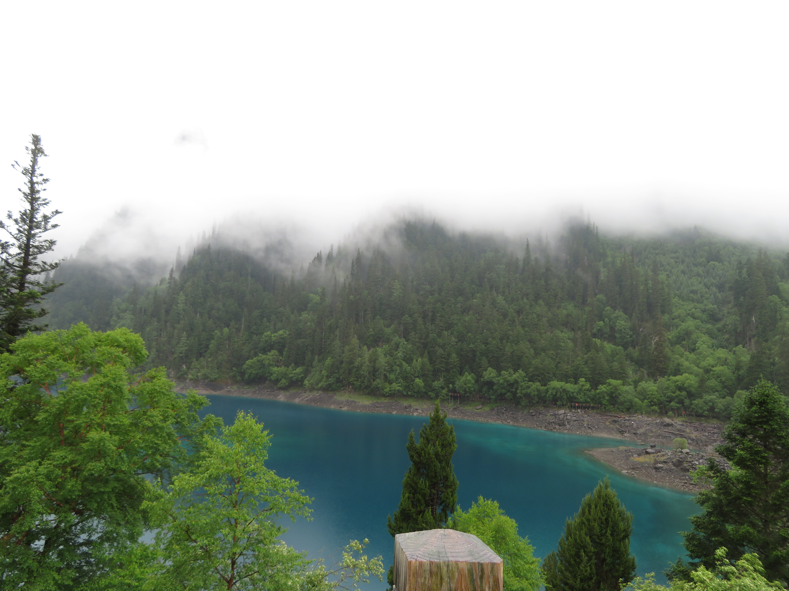
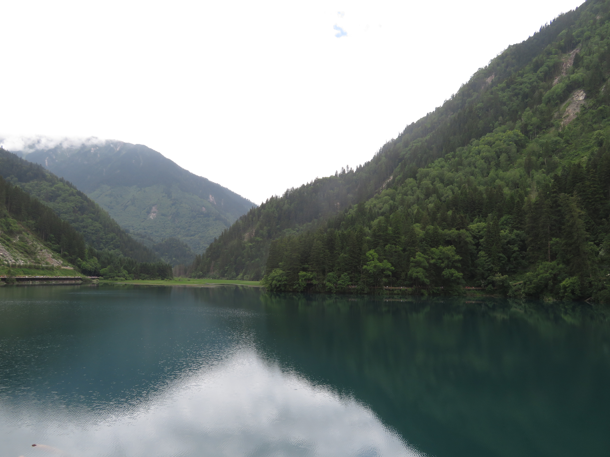
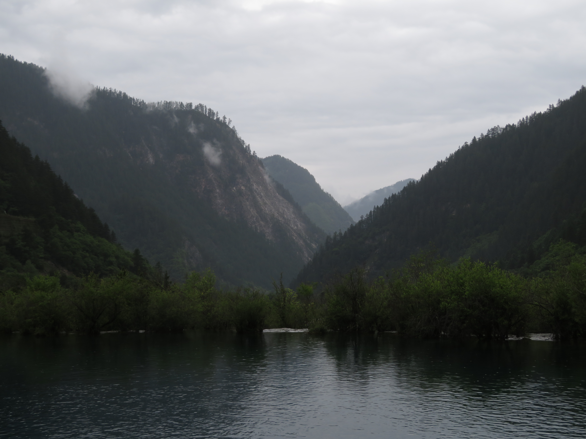

Five Colored Pond

Nuorilang Falls
Jiuzhaigou Valley National Park in northern Sichuan is one of China's most beautiful destinations. Within its valleys are tons of blue and crystal clear lakes, some of the best mountain views, and some of China's most stunning waterfalls.
Five Colored Pond
Nuorilang Falls
Jiuzhaigou contains 3 main valleys: Zechawa, Rize, and Shuzheng. Zechawa Valley is the highest elevation valley in the park, consisting of Jiuzhaigou's largest and highest alpine lake, Long Lake, at over 3100m above sea level, as well as the smallest and one of the most vibrant lakes, the 5-Colored Lake, containing stunning hues of heavenly blue.

Long Lake

5-Colored Lake
The Rize Valley contains the largest collection of alpine lakes in Jiuzhaigou. Every one of them was absolutely stunning, with highlights being the deep blue Panda Lakes, the crystal clear Mirror Lake, and the gorgeous Arrow Bamboo Lake/Jianzhuhai.

Panda Lake

Mirror Lake

Jianzhuhai
The Shuzheng Valley is the closest valley to the entrance, and is the most stunning in my opinion. Its main attraction is Nuorilang Falls, known as the widest and one of the largest natural waterfalls in China. The valley also consists of some awesome valley and mountain views above the park's waters, with Tiger Lake and the Shuzheng Lakes being my favorite areas of the valley. The Shuzheng Lakes trail was also the only major hike I got to do here, yielding some spectacular views of the mountains above the valley as well as many hidden lakes and waterfalls.

Nuorilang Falls

Nuorilang Falls

Tiger Lake

Shuzheng Lakes

Shuzheng Lakes

Shuzheng Trail